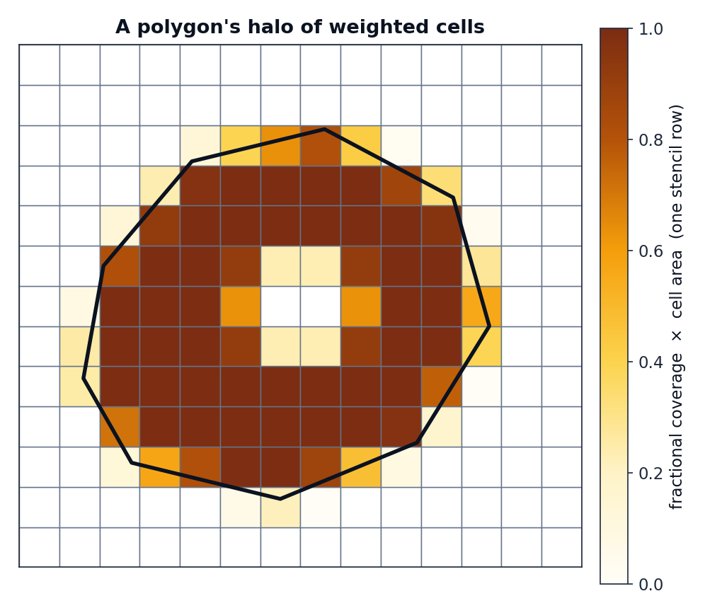

The stencil¶
The Stencil is geohalo's concrete realisation of the operator \(\mathbf{W}\) from
the previous page. It is a frozen dataclass wrapping a sparse
matrix and just enough metadata to apply and validate it.
How it is built¶
Stencil.compute(lats, lons, geoms) runs a fixed pipeline:
flowchart TD
A["lat/lon centres + polygons"] --> B["derive cell edges<br/>(midpoints, EPSG:4326)"]
B --> C["exact_extract → per-cell<br/>coverage fraction ∈ [0,1]"]
B --> D["cell_areas → R²·Δλ·(sinφ_top−sinφ_bot)"]
C --> E["weight = coverage × area"]
D --> E
E --> F["scipy.sparse CSR<br/>(n_polygons × n_cells)"]
classDef hl fill:#fef3c7,stroke:#b45309,color:#0b1220;-
Canonicalise the grid. Latitudes are flipped to ascending and both axes are checked for regular spacing —
exactextract's raster model assumes a uniform EPSG:4326 grid, and an irregular axis would silently misplace coverage fractions. -
Sort the polygons by key.
repr(key)ordering makes the build (and its digest) independent of the order you passed geometries in. -
Exact coverage. A
NumPyRasterSourcedescribes the grid's bounding box;exact_extractreturns, for each polygon, the list ofcell_ids it touches and the fraction of each cell covered. This is the unbiased boundary treatment — see why exact fractional coverage. -
Weight by area. Each coverage fraction is multiplied by the cell's true spherical area, so a half-covered equatorial cell outweighs a half-covered polar one. See latitude correction.
-
Assemble CSR. The
(polygon, cell, weight)triples become ascipy.sparse.csr_matrix— theoccupancy_matrix.
cell_id → grid index
exactextract numbers cells from the top-left with longitude fastest. geohalo
converts back to its ascending-latitude convention with
row_asc = n_lat - 1 - cell_id // n_lon and col = cell_id % n_lon, so the
matrix columns line up with a flat = arr.reshape(-1, n_lat * n_lon) of the data.
What a row looks like¶
One row of the occupancy matrix is a polygon's halo — the weighted set of cells it overlaps. Interior cells get their full area; boundary cells get a fraction; a hole in the polygon punches the weights back out.

row_sums and normalisation¶
__post_init__ precomputes row_sums = occupancy_matrix.sum(axis=1) — each polygon's
total overlap area. That vector is the denominator for how="mean", so the mean hot
path never re-sums the matrix.
Empty overlaps are errors, not silent zeros¶
If a polygon does not intersect the grid at all — or its overlap area rounds to zero —
geohalo raises EmptyOverlapError(geom_key) rather than emitting an all-zero row that
would later divide to NaN. This surfaces grid/polygon mismatches early.
import geohalo as ghl
try:
stencil = ghl.Stencil.compute(lats, lons, geoms)
except ghl.EmptyOverlapError as e:
print(f"polygon {e.geom_key} falls outside the grid")
Cost¶
Building a stencil is the expensive step — it scales with the number of polygons and
their vertex count, since exactextract clips every polygon against the raster. The
resulting CSR matrix, by contrast, is tiny (kilobytes to a few megabytes) and is what
you cache. See the
Stencil.compute rows in the benchmarks.
| n_polygons (Brazil L2) | build time | CSR size |
|---|---|---|
| 50 | ~21 ms | 6 KB |
| 507 | ~170 ms | 38 KB |
| 5571 | ~2.1 s | 430 KB |
Once built, applying it to a batch of 50 grid slices takes a few milliseconds.